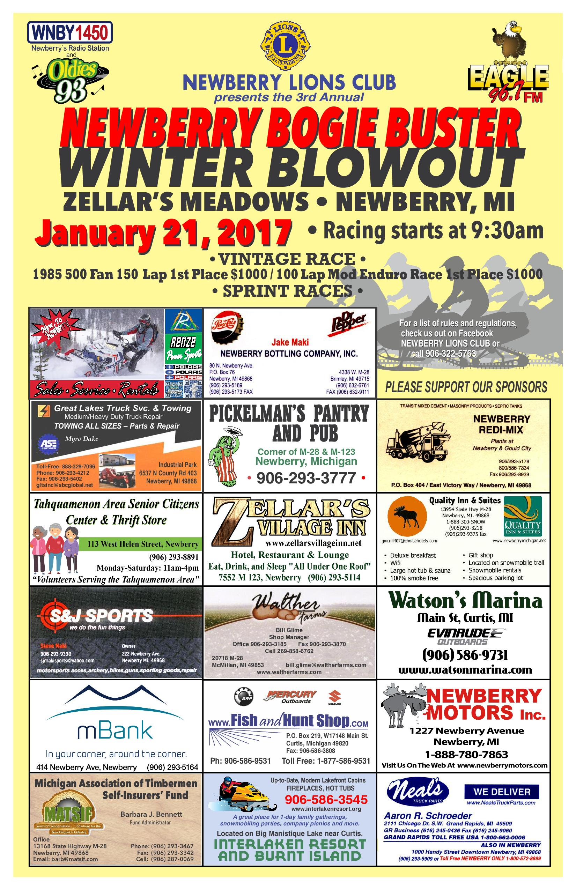

|
NEWBERRY
Thanks to all the racers that showed up. The Newberry Lions Club had a great time racing with all of you this year and have already started making adjustments for next year to make this an even better track and race. My favorite part of racing is the family atmosphere, it was a smaller than usual race this year due to weather conditions, but teams stepped up and helped fellow team members with their sleds. Teams were even giving sleds to others to race, just to see the smile on their faces like they themselves have. This is truly a family event, maybe not by blood family, but by the love of racing family.
Congratulations to Team Chippewa and the Hank family for winning this years $1000 1st place prize in the Newberry Bogie Buster 1 Lunger Enduro.
Congratulations to Zack Frazier for winning the Billy Travis #34 Super Stock 150 $1000 1st place prize.
Not only did Zack endure the 150 laps, when presented with his prize, he donated half his winnings to Billy Travis�s family. This is how much racers are truly family. This has been an unusually hard year here in Newberry losing 2 racers that represent our town (Tyler Barker, and Billy Travis) . Our prayers are with both families.
Tyler, you should be proud of your teammates. They represent you well and I hope to see great things from them next year. Great job team 906, you all are truly great friends!
Thanks again to all of our sponsors this year without you this event would not be possible.
Download Rules Here

|